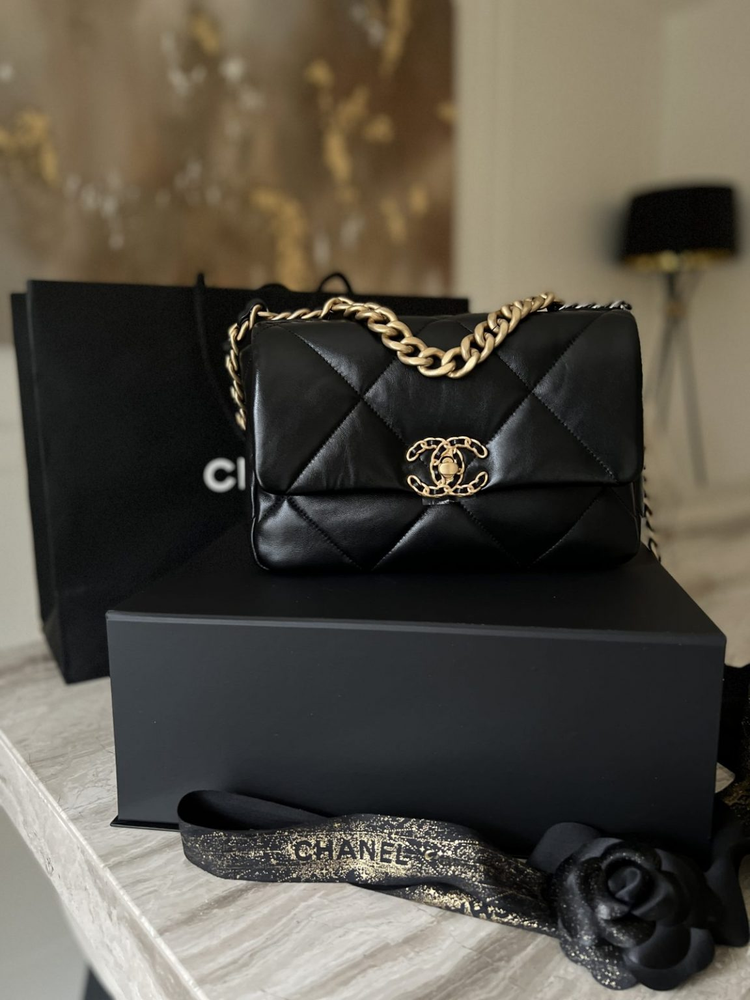

Is your favorite on these lists? Are they worth the investment? Handbags have come a long way since the early 1900's. With the may influences culturally and artistically, todays handbags are as diverse as ever. So let's see what the recent trends indicate.
Elle/Vogue
Fashion editors across the globe have similar lists of favorites and must haves. Here's one of my personal favorites:
The Chanel 19-$6500.00
My favorites have a timeless elegance about them that I adore and with the availability of online consignment shops, finding authentic items at a affordable price makes adding these to your collection a feasible reality. In comparing some data from 3 years ago, I can see what the potential is for resale value for some brands. Its interesting to see the change in comparison to today. Let's see how handbag savvy YOU are!

Which brand do you think is trending this September according to Fashion Editors from Vogue.com?Vogue
Which brand is most expensive?
What are the top favorites amongst Fashion blogs? WhoWhatWear
What brand is most affordable?
So how did you do? See the results here. Luxury Handbag Project
Now that you have a sense of your handbag style, here's a list of online consignment shops to search for your treasures. Happy Handbags!! LUXE DIGITAL